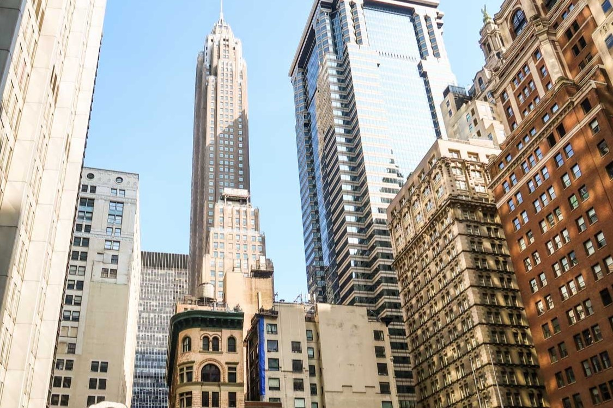

Miércoles 24 de abril
Jueves 25 de abril


Viernes 26 de abril
Mañana
| Actividad | Transporte | Hora | Imagen |
|---|---|---|---|
| Desayunar | - | 08:00-09:00 |

|
| Metro al World Trade Center (Oculus) | 🚇30min | 09:30-10:00 |

|
| Memorial 11S | - | 10:00-11:00 | |
| Distrito financiero | - | 11:00-12:00 |  |
| Toro de Wall Street | - | - | |
| Estatua de la Libertad e Isla Ellis | 🚇35min | 12:00-15:30 |

|
Tarde
| Actividad | Transporte | Hora | Imagen |
|---|---|---|---|
| Helicóptero nocturno | 🚶30min | 18:00 - 19:00 |

|
Sábado 27 de abril
Mañana
| Desayunar | - | 07:00-08:00 |
|
| Tour de los contrastes | 🚇30min | 09:00-13:30 |


Domingo 28 de abril
Mañana y tarde
| Washington DC | 🚇15min | 06:00-22:00 |

|
Lunes 29 de abril
Mañana
| Hudson Yards y edificio Vessel | 🚇20min | 09:00-10:00 | |
| Parque High Line | 🚶30min | 10:00-11:00 |

|
| Pier 57 Rooftop | 🚶5min | 11:00-12:00 | |
| Comer en Chelsea Market | 🚶10min | 12:00-14:00 |

|
Tarde
| Graffiti Kobra | 🚶5min | 14:00-14:30 |

|
Martes 30 de abril
Mañana
| Actividad | Hora | Tiempo de Transporte |
|---|---|---|
| Desayuno en el hotel | 9:00 - 10:30 | N/A |
| Visita al Museo Whitney de Arte Estadounidense | 10:30 - 12:30 | N/A |
Tarde
| Actividad | Hora | Tiempo de Transporte |
|---|---|---|
| Almuerzo en Greenwich Village y tiempo libre para explorar boutiques y galerías de arte | 13:00 - 15:00 | N/A |
| Compras en la Quinta Avenida y visita a grandes almacenes como Macy's | 15:30 - 17:30 | N/A |
Miércoles 1 de mayo
Mañana
| Desayunar | - | 07:00-08:00 |
|
| Subir al mirador Summit | 🚇20min | 09:00-11:00 |
Jueves 2 de mayo
Mañana
| Actividad | Hora | Tiempo de Transporte |
|---|---|---|
| Desayuno en el hotel | 9:00 - 10:30 | N/A |
| Últimas visitas o compras de último minuto | 10:30 - 12:30 | N/A |
Tarde
| Actividad | Hora | Tiempo de Transporte |
|---|---|---|
| Almuerzo ligero y regreso al hotel para hacer el check-out | 12:30 - 14:00 | N/A |
| Traslado al aeropuerto y procedimientos de salida | 15:00 - 18:00 | N/A |
Viernes 3 de mayo
Mañana
| Actividad | Hora | Tiempo de Transporte |
|---|---|---|
| Vuelo de regreso a casa desde el Aeropuerto Internacional John F. Kennedy | 7:00 - 10:00 | N/A |